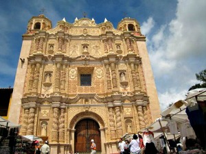
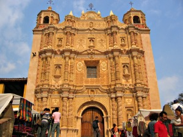
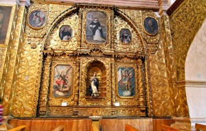
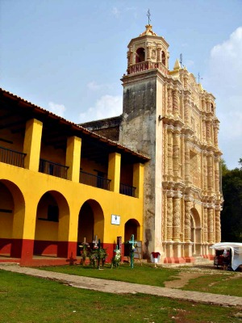
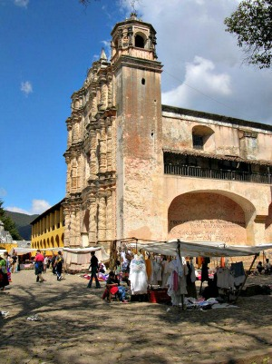

Su construcción se inició en el año de 1547 y terminó en 1560 con remodelaciones en el año de 1698, ya que se tuvo que restaurar debido a su caída ocasionada por un terremoto.
Su fachada es tipo barroco salomónico y está decorada con motivos religiosos en los que destacan la imagen de Santo Domingo y un tapizado de flores en relieve que constituyen la mayor parte de la ornamentación. Esta construcción se asemeja a otros templos dominicos en el estado de Oaxaca y Guatemala.
Se encuentra ubicado en la Avenida 20 de Noviembre a la altura de la calle Real de Mexicanos.
Si usted se encuentra ubicado en la plaza de la paz viendo de frente hacia la catedral puede caminar hacia su izquierda pasando como referencia encontrará la Zapateria Catedral y Frente a este el Restaurant VIA VAI entre estos dos lugares encontrará el andador eclesiástico camine sobre el andador hasta llegar a la plazuela de Santo Domingo usted se encontrará muchos puestos de artesanías en la plazuela camine derecho por los puestos hasta encontrar la iglesia.
En el lugar usted puede realizar actividades como:
* Fotografía
* Visita a lugares históricos
* Visita a iglesias
* Manifestaciones Religiosas





posicione el mouse sobre las imágenes